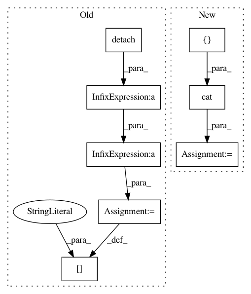

f93beff338925cc1bf1b3ff1b32a2c440a4c9427,tests/_tests_scripts/z_mvp_mnist_gan.py,CustomRunner,_handle_batch,#CustomRunner#Any#,18
Before Change
// fake
generated_labels_ = torch.zeros(bs, 1).to(self.device)
generated_pred_ = self.model["discriminator"](
generated_images.detach()
)
fake_loss = F.binary_cross_entropy(generated_pred_, generated_labels_)
// loss
loss_discriminator = (real_loss + fake_loss) / 2.0
self.state.batch_metrics["loss_discriminator"] = loss_discriminator
def main():
After Change
random_latent_vectors
).detach()
// Combine them with real images
combined_images = torch.cat([generated_images, real_images])
// Assemble labels discriminating real from fake images
labels = torch.cat(
[torch.ones((batch_size, 1)), torch.zeros((batch_size, 1))]
In pattern: SUPERPATTERN
Frequency: 3
Non-data size: 8
Instances
Project Name: Scitator/catalyst
Commit Name: f93beff338925cc1bf1b3ff1b32a2c440a4c9427
Time: 2020-04-21
Author: scitator@gmail.com
File Name: tests/_tests_scripts/z_mvp_mnist_gan.py
Class Name: CustomRunner
Method Name: _handle_batch
Project Name: mariogeiger/se3cnn
Commit Name: 79d0265a90a7ee0847807dc299983aaef9e875a5
Time: 2018-10-16
Author: michal.tyszkiewicz@gmail.com
File Name: se3cnn/batchnorm.py
Class Name: SE3BatchNorm
Method Name: forward